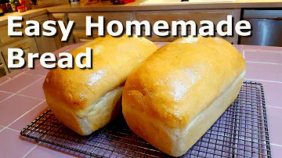

Homemade White Bread

Description
A delicous white bread perfect for sandwiches and just about everything else!
Ingredients
- Seven cups of bread flour
- Three cups of water
- Two tablespoons of instant yeast (two packets)
- Three teaspoons of salt
- Two tablespoons of oil (vegetable, canola, and olive oil will all work fine)
- Two tablespoons of salted butter
- A stick of salted butter
Equipment
- Oven
- Standmixer with dough hook (optional but highly recommended)
- Mixing bowl
- Two loaf pans
- Microwave
- Silicone basting brush
Recipe
Yields two loaves of bread
Estimated time : 3 hours
- Add lukewarm water to a mixing bowl.
- Add yeast to the water and mix until yeast dissolves.
- Let sit for a few minutes.
- Add flour, salt, and oil to the mixing bowl.
- Mix until it is a doughy consistency (use a standmixer on low with dough hook if you have one).
- Turn dough onto a well floured board and knead for eight minutes (this step can get messy as the dough will stick to your hands).
- Form dough into a ball shape, cover with a clean towel, and let rest for 3 minutes.
- Turn the ball over and flatten it out.
- Start to shape the dough into a ball by grabbing an end, and folding it over.
- Sprinkle flour on top of the ball of dough, cover again with a clean towel, and let rest for one hour.
- Remove towel and flatten dough ball into a pancake like shape. Cut down the middle to make two even pieces of dough.
- Preshape your loaves by folding one end of the dough almost halfway lengthwise, and the other end completely over it.
- Knead until it is in a ball shape. Sprinkle a pinch of flour on top when done.
- Repeat for other half of the dough.
- Cover both with a clean towel and let rest for 15 minutes.
- While it rests, grease your loaf pans with a stick of butter.
- Flatten the ball of dough and fold one end at an angle.
- Fold opposite end over the just folded end. It should be a triangle like shape.
- Take smallest end and roll it over itself into a loaf-like shape. Pinch the end into the loaf so it is seamless.
- Rub a sprinkle of flour onto the dough until it is evenly covered.
- Place the dough into the loaf pan.
- Repeat for other dough piece.
- Cover both loaf pans with a clean towel and let rest for one hour.
- Preheat oven to 400 degrees F.
- Bake for 40 minutes, but start checking at 35 in case they finish early.
- Take bread out of oven and transfer onto wire rack.
- Brush top of bread with melted butter from microwave.
- For best results, don't cut into the bread until the next day.
Back to home